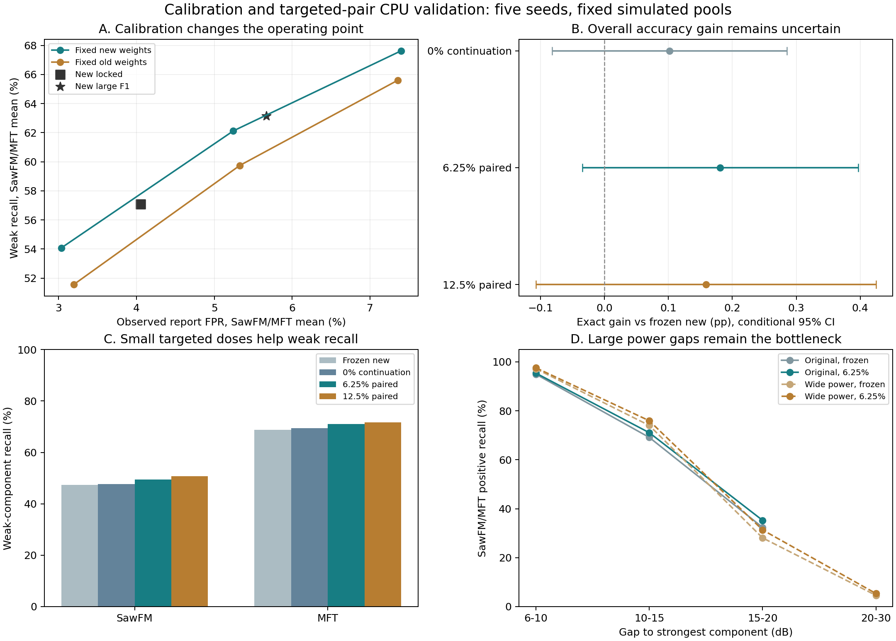

完成时间2026-11-04 19:45:19（北京时间）；耗时15分51秒。15个头副本全部完成360轮、90000实际优化器步，无运行失败。审计通过：1068组指标、10份校准决策、18个独立重生成的原始配对波形；原始参考权重和其他四类输出/阈值保持不变。
6.25%定向配对改善了弱分量召回，但整体Exact提升尚不显著。大校准池主要改变误报—漏检权衡，没有得到可替代原阈值的共同决策。
Exact为整组标签完全正确率；五种子均值，非模型集成。不同阶段使用不同报告池，不能跨池相减。
| 新固定候选规则 | Exact | SawFM弱召回 | MFT弱召回 | 两目标平均FPR |
|---|---|---|---|---|
| locked | 73.906% | 45.307% | 68.862% | 4.055% |
| f1_1008 | 73.867% | 53.150% | 63.504% | 4.541% |
| f1_8064 | 73.894% | 53.932% | 72.388% | 5.668% |
| fpr03 | 74.110% | 44.503% | 63.638% | 3.037% |
| fpr05 | 73.993% | 52.347% | 71.897% | 5.244% |
| fpr07 | 73.304% | 57.844% | 77.411% | 7.397% |
| weak_guard | 73.844% | 54.588% | 72.902% | 5.885% |
8064条大池F1相对预先指定的1008条小池，Exact只提高0.027pp（条件95%区间[−0.511,+0.565]）；两目标平均弱召回提高4.833pp，同时平均FPR增加1.127pp。MFT弱召回63.50%→72.39%，体现决策点移动，不是排序能力提高：各阈值下弱AP完全相同。
check阶段仅locked满足两个固定候选的全部共同保护条件；大池F1、5%及7%预算违反新候选逐类FPR增量上限，3%预算则损失弱召回。旧候选weak_guard在4/5种子不可行，按预定规则不参加共同选型。没有使用报告结果重新挑阈值。
八份1008条校准子池的阈值有波动（新候选SawFM/MFT平均标准差约0.070/0.106），说明原小池有抽样不确定性；本轮没有重复多个独立8064池，不能量化大池方差降低多少。
| 方法 | Exact | Saw弱召回 | MFT弱召回 | 两目标FPR | 两目标弱AP |
|---|---|---|---|---|---|
| 固定新候选 | 74.506% | 47.319% | 68.751% | 3.707% | 78.140% |
| 0%自然继续训练 | 74.608% | 47.653% | 69.465% | 3.674% | 78.520% |
| 6.25%分层配对（check预选） | 74.688% | 49.499% | 70.976% | 4.083% | 78.697% |
| 12.5%分层配对 | 74.665% | 50.812% | 71.626% | 4.357% | 78.671% |
| 固定旧候选 | 74.040% | 52.191% | 71.836% | 4.947% | 77.095% |
6.25%相对固定新候选：Exact提高0.181pp，条件95%区间[−0.035,+0.397]，4/5种子提高，未通过整体Exact门槛。SawFM弱召回提高2.180pp、MFT提高2.225pp，五种子均提高；两者平均提高2.202pp，区间[+1.474,+2.931]。SawFM/MFT FPR分别增加0.459/0.292pp，按五种子均值通过预设弱召回权衡门槛；此门槛允许小幅误报增加，不代表等误报率改善。
相对0%继续训练，6.25%的配对额外贡献为：Exact +0.079pp，区间[−0.100,+0.258]；平均弱召回+1.679pp，区间[+0.713,+2.645]；弱AP +0.177pp，区间[+0.087,+0.266]。存在小幅排序收益，不能把相对固定权重的全部改善归因于配对。相对继续训练的SawFM FPR增加0.549pp，超出辅助权衡门槛0.5pp，未通过这项更严格对照。
12.5%使平均弱召回提高3.184pp，但SawFM FPR增加0.781pp，超过弱召回权衡的0.5pp上限；Exact也未优于6.25%。当前不支持扩大配对比例。原固定参考权重和其他四类输出保持不变。
本轮按功率差分层，使配对目标正侧中2/3属于至少10dB弱分量，明显高于此前未分层配对约22%的水平。但与上一轮25%方案相比，还同时改变了初始化、学习率、训练标签范围和配对筛选，不能把跨轮结果差异只归因于降低配对比例。本轮0%、6.25%、12.5%的共同对照才用于收益归因。
大池F1辅助规则下，6.25%与12.5%均约74.983% Exact；该规则没有通过第一阶段共同选型，因此属于预设辅助结果，不能替代主决策locked的验收，也不能据此宣称达到稳定75%。相对固定旧候选，预选6.25%主决策Exact提高0.647pp，区间[−0.007,+1.302]，仍跨零。
| 补充报告 | 方法 | Exact | Saw弱召回 | MFT弱召回 |
|---|---|---|---|---|
| 宽功率10～40dB自然报告 | 固定新候选 | 53.244% | 30.623% | 47.724% |
| 宽功率10～40dB自然报告 | 0%自然继续训练 | 53.393% | 30.813% | 48.338% |
| 宽功率10～40dB自然报告 | 6.25%分层配对（check预选） | 53.527% | 32.331% | 50.051% |
| 宽功率10～40dB自然报告 | 12.5%分层配对 | 53.591% | 33.496% | 50.716% |
| 功率差分层的配对边留出报告 | 固定新候选 | 56.502% | 42.708% | 56.980% |
| 功率差分层的配对边留出报告 | 0%自然继续训练 | 56.641% | 42.599% | 57.592% |
| 功率差分层的配对边留出报告 | 6.25%分层配对（check预选） | 56.571% | 43.646% | 58.082% |
| 功率差分层的配对边留出报告 | 12.5%分层配对 | 56.319% | 44.260% | 58.653% |
宽功率报告Exact仅53.24%→53.53%，改善较小。两目标在原分布15～20dB差距的召回32.38%→35.25%；宽功率20～30dB差距仅4.63%→5.37%。本轮训练只覆盖20dB以下差距，没有解决更极端功率差。
配对边留出报告Exact56.50%→56.57%，无明显提升。15～20dB差距中，SawFM单条信号AUROC约74.46%→74.60%、正侧召回21.46%→22.50%；MFT AUROC78.31%→78.52%、召回38.96%→39.90%。说明对最难边界的排序改进仍很小；这些结果不能证明信息论不可观测，也不能称完全未见组合泛化，原backbone已见过全部63种组合。
将6.25%保留为弱分量候选，冻结其权重、决策和比例，在新的独立身份池与固定新候选、0%继续训练共同复现；不要继续用本轮报告调参。若核心目标是提升整体Exact，应先验证15～20dB困难样本在全局128维特征中是否丢失区分信息，再做信号长度或局部时频证据的受控消融。现阶段没有证据支持增加到12.5%或单纯延长头训练。
限制：固定仿真池上的五种子条件区间，次要比较未校正多重检验；统一校准预算不保证测试FPR相同；使用同一Python物理仿真器和固定FMB，缺少实测信号验证。本复核只读取结果，未修改训练、阈值或候选选择。
